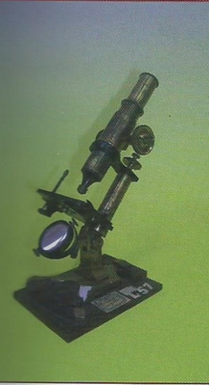

Microscopio
Scuola di provenienza: Liceo Classico "P. Colletta", Avellino
Settore: Ottica
Costruttori: Sconosciuto
Materiali: Legno, ottone e vetro
Accessori: Nessuno
Stato di conservazione: Buono
Descrizione: Il microscopio si usa per ottenere ingrandimenti molto più forti di quelli forniti da una semplice lente d’ingrandimento. Il microscopio è uno strumento ottico costituito da un tubo cilindrico che porta agli estremi due sistemi convergenti e l'obiettivo è l’oculare. L'obiettivo da un’immagine reale e ingrandita dell'oggetto da esaminare. L’oculare agisce co9me una lente di ingrandimento per l’osservazione dell'immagine reale data dall'obiettivo. L'obiettivo e l’oculare non sono delle semplici lenti ma sistemi convergenti composti da più lenti, al fine di eliminare le molteplici aberrazioni delle immagini.